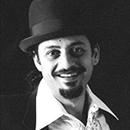

|

Il “Cencio” per il 2 luglio 2010, la cui parte allegorica sarà dedicata alla ricorrenza del 750° anniversario della battaglia di Montaperti, sarà appunto dipinto da Alì Hassoun.
L'artista nato a Sidone in Libano nel 1964 e trasferitosi a Siena da giovanissimo, ha vissuto e lavorato nella città fin dagli anni ’80 e parte degli anni ’90. Successivamente ha frequentato l’Accademia di Belle Arti e la Facoltà di Architettura di Firenze, dopodichè si è trasferito a Milano, dove ha raggiunto la maturità artistica e il successo.
Ali Hassoun è un artista sufi, la corrente mistica dell'Islam basata su dettami analoghi a quelli francescani di obbedienza e povertà, che in ogni quadro canta il suo amore per Dio creando un ponte tra Islam e Rinascimento.
Dipinge storie senza tempo, in dialogo continuo tra sfondo e primo piano, tra il presente contemporaneo legato al mondo arabo e l'arte italiana del Rinascimento.
I suoi personaggi, che hanno i volti ambrati della gente mediorientale o i turbanti dei sapienti afgani, sono ritratti in costante relazione tra sfondo e primo piano.
Nelle sue opere l'artista libanese evidenzia il legame intrinseco tra la vita colorata e materica, che mantiene in primo piano davanti agli occhi dello spettatore, e lo scenario etereo e monocromatico che crea in secondo piano e che dà alla scena una dimensione sacra.
Tra le sue opere, quelle che seguono sono un esempio di questo forte dualismo tra Islam e Rinascimento, tra materialità e spiritualità, tra colore e monocromia, in cui entrano anche in scena etereamente i cavalli.
  


CLICCA PER
INGRANDIRE
| |
Il drappo di seta, che andrà in premio alla Contrada vincitrice, ricorda, come scrisse Dante nel X canto del’Inferno, “Lo strazio e ‘l grande scempio che fece l’Arbia colorata in rosso”, portando Siena a vincere contro la guelfa Firenze.
Nella bellissima opera di Hassoun i riferimenti storici ci sono tutti, compreso il richiamo, al grido del nome di San Giorgio, con il quale la prima divisione condotta dal conte d’Arras attaccò il nemico guelfo.
Sulla seta, infatti, primeggia lui, S. Giorgio, dentro un’armatura che riflette la luce irradiata dal volto della Madonna, dipinta, con maestria, in alto. In basso un drago dalle sembianze diaboliche e trafitto da due frecce.
Infatti, come ha detto il pittore: "la battaglia più grande è quella dello sforzo di combattere e vincere il male che è in ognuno di noi".
Al posto dell’elmo, il Santo, nato presumibilmente in Cappadocia, l’odierna Turchia, e morto in Palestina nel IV secolo, porta una kefiah, leggermente rivisitata, che richiama, in maniera esplicita, lo stemma della città di Siena.
Se a una prima lettura l’opera di Ali Hassoun può sembrare piuttosto lineare nei confronti di quanto richiesto dalla committenza, l’occhio di chi guarda nel particolare, senza farsi abbagliare dall’insieme, troverà una serie di precisi richiami a un tema di estrema attualità: la ricerca di una condivisa umanità che, con il raziocinio,schiacci, annientandoli, i sussulti e gli scontri di civiltà in nome di un Dio che non può essere diviso, bensì condiviso.
Il messaggio di Hassoun è forte, e per nulla banale. La corona sul capo della Vergine porta tre simboli: la mezzaluna araba, la croce cristiana e la stella di David. Tre segni monoteistici. Tre significati. Un unico messaggio-auspicio: la pace con l’unione dei popoli.
La sua è un’idea di umanità, che nasce da una universalità ben radicata in un concetto di spiritualità scevra da differenziazioni religiose e politiche. Un concetto identitario che dovrebbe trovare ospitalità in qualsiasi cultura contemporanea.
Non a caso il viso di Maria è dichiaratamente moderno, guardandola, al lobo destro,
anche un orecchino, così come il volto di San Giorgio, dove è facile riconoscere il pittore, che non si scherma dietro la tavolozza dei colori. Tutt’altro. Firma il Palio anche in lingua araba.
Il dialogo, aperto da Hassoun, tramite la festa senese su Cristianesimo e Islam ha, infatti, come tramite una delle immagini sacre più amate dai senesi: l’effige della Madonna miracolosa conservata nella Chiesa di Provenzano. E, sempre alla Madonna, l’Islam dedica la 19esima sura del Corano.
San Giorgio sconfisse il male con la sua spada e la sua fede. Siena, in un confronto interculturale, cerca di combattere lo scontro di civiltà scegliendo un pittore che, con la sua arte, riesce a parlare all’intelletto passando dal cuore.
Articolo tratto da www.sienafree.it
|


|